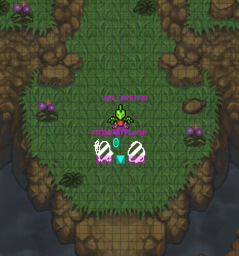

I am a Pokémon Mystery Dungeon rom-hacker. While I spent some time on Super (and even wrote a custom cutscene for it), most of what I did was on Explorers of Sky, for the simple reason of having SkyTemple, a nice software for making all kinds of cutscenes.
I think I’ll reduce my work on EOS. I may just keep continuing to work on improving SpriteBot for making it more generic. The reason for that is due to copyright. Over time, I grew bothered (and sometimes stressed) of working on something that is ultimatelly dependant on the copyright of someone else on which I have no control (whoever the copyright owner of EOS are, I think its Nintendo and Chunsoft). I decided it is probably better if I instead spend time on working and improving libre game, which are (basically) contractually bound to have permissive copyright (due to the choice of their authors). The immense majority of them are also not for profit, and are made by passionate people. I think I’ll mostly work on Veloren and OpenMW (that is not a game but a game engine, and a pretty good one, even thought I’ll probably target Morrowind, I’ll keep my stuff generic enought that it could be used by other (potential) game using OpenMW). But that may change in the future as new libre games are made and I discover new one.
Cutscenes is not the only things I made (and I consider myself to be good at) with SkyTemple and EOS. In particular, I also consider myself a competent reverse-engineerer and asm-patcher (many thanks to Ghidra and by extension the NSA for this. They are far betters tools than Radare2 and it’s GUI). I also did some tileset of dungeon and other place, thought most of the time it was re-arranging assets from the games or OpenGameArt (thought sometimes with a creative twist. I’m still proud of my cemetery tileset I did for Delusion).
This document will share what I consider to be important when making a cutscenes system in a similar style to EOS. It could be usefull for SkyTemple’s users, but it’ll also be for sharing how these cutscenes works, and may be a source of inspiration for someone making their own games/mods (of course, all of this may not be appropriate for every case. In particular, I hardly see how this could integrate into a Morrowind-like game, when player keep control during cutscene. It’s also mostly usefull for game where you program/script cutscenes. Other design could also be used, and maybe even mix multiple. The interest of being able to make such script cutscene is that they allow to write them quicker than manually animating everything, in addition to allowing a bit more flexibility for player input)
The cutscenes are stored in a compiled file, which is decompiled (and recompilable) with SkyTemple using a language (created for SkyTemple, so different from what the game dev used to make the game) ExplorerScript.
Cutscenes also have a definition, which is the initial state of the cutscene. It define which actors (character) appears and will appears on the cutscenes. (a character need to in the definition for it to appear, but it can be moved out of the camera view or made invisible until needed). This definition format is the same than those used during free-roam (and in fact it is cutscenes that are responsible for making the player change area and interact with the world), even thought they have some extension specific to letting a player free-roam. A cutscene can also be run while the player have control over a character, althought it doesn’t seems to be used much if at all.
Those definition files also contain the list of objects (2d sprites that are not actors, and are animated differently, if at all) as well a performers (an invisible entity than can also be mooved an play effect, most of the time used to move and set the camera by first attaching it a performer and then moving the performer). There is also a configurable trigger for free-roam, that run a cutscene on some configurable condition (when the player press the interact button inside of it, or when the player enter it, but I think there are a few other co.nditions. And of course script can exit early)
Inside a script are multiple function. Each of these are linked to one of the placeable kind of stuff, and control it’s movement. There is also thread 0, which is not linked to any entity, and is what is used most of the time to drive the cutscene. That thread 0 can also control other entity (as long as said controlled entities does not have a thread running on them at the time it is being controlled). In practice, only thread 0 control others entities. I haven’t check of they are safe to use elsewhere.
Inside a thread (function), you have multiple kind of process flow control. There are loops, conditions, some variable operations, goto, the functions that control various things in-game and hold/end terminating instructions (using end on an entity will remove it, while hold will just keep its state). The main thread call function on others entities in a with block, that: 1. Wait for the previous running function on the entity to end, if any and 2. Start the new function on the entity, returning as soon as it’s started.
The command called are the same than on an entity-specific thread. Function that would block on a thread will not block the main thread (unless a second with targetting that entity is called, as described before, which ensure entities still have a single instruction running at a time). One particularly problematic thing with this method is that with blocks can only contain a single instruction, which can then lead to complex thing if wanting to animate two actor that looks independant this way. (but it still is the simplest way to do that, and many people made great things only using this threading technique).
Now, coming into the generic functions: You have many of them, each doing something. Here are some of what I consider to be common and representative.
Move2PositionMark make an actor walk (or move) to some coordinate, using the good orientation and animation if it’s an character.Slide2PositionMark is like Move2PositionMark, but keep the current entity orientation and animationmessage_Talk take a (optionally translated) text as input, and display it in a dialogue box. How it wait depend on the context, but the most common cases are:SetOutputAttribute and ResetOutputAttribute allow to control a bitflag that decide of some value on how the actor look (for example, this can allow to make it invisible or make it appear over dialogue box)Lock and Unlock are some simple locking mechanism. You first lock on a certain number, on which the thread wait until another thread call Unlock on that number (note that multiple thread can wait for the same number, they are all unlocked at the same time)
In addition, multi-thread is cooperative multitasking, but not parallel (the DS, while having 2 different CPU, only use one for game-specific logic, the second is used to control I/O.
def 0 {
sound_Stop(); // stop playing sound any sound that would be playing from the previous cutscenes.
back_SetGround(LEVEL_S04P01A); // set the background (this one is a special, pure black background, often used when you want nothing to be displayed)
screen_FadeIn(1, 0);
message_SetFace(ACTOR_ATTENDANT1, FACE_PAIN, FACE_POS_STANDARD); // Set the face for the dialogue boxes
message_SwitchTalk ($PARTNER_TALK_KIND) { // different text dependant on the partner talk kind, which depend on their gender and its species.
case 1:
{
english=" Ugh...[K] We got wiped out.",
french=" Argh...[K] On a échoué.",
german=" Uff...[K] Wir wurden ausgeschaltet.",
italian=" Uff...[K] Ci hanno sconfitti.",
spanish=" Uf...[K] Qué paliza.",
}
case 2:
{
english=" Ugh...[K] That didn\'t go well.",
french=" Argh...[K] On a échoué.",
german=" Uff...[K] Das hat nicht geklappt.",
italian=" Uff...[K] Non è andata bene.",
spanish=" Uf...[K] La hemos pifiado bien.",
}
default:
{
english=" Ugh...[K] That wasn\'t so good.",
french=" Argh...[K] On a échoué.",
german=" Uff...[K] Das war nicht so gut.",
italian=" Uff...[K] Non è andata molto bene.",
spanish=" Uf...[K] Qué mal lo hemos hecho.",
}
}
message_KeyWait(); // Display the close dialog prompt and wait the user to press it (but do not actually close the message, it’s message_Close() for that)
screen_FadeOutAll(1, 60); // Fade to black over 60 frame (1 sec). The first param is weither it should wait for it to finish or not (here, it’ll wait).
// Usefull for the dialogue box and portrait, that are the only things displayed.
message_CloseEnforce(); // This one close the dialogue (without asking the user)
CallCommon(CORO_FADE_OUT_ALL_AFTER); // Call a function (coroutine)
back_SetGround(LEVEL_D27P11A); // Set a new background
supervision_StationCommon(0); // Some init stuff, that’s quite complex and have an hard time to understand. I don’t usually use that complex things.
supervision_LoadStation(LEVEL_D27P11A, 'UM24');
supervision_Station(2);
supervision_Acting(0);
Wait(1);
with (actor ACTOR_NPC_RAPURASU) { // Execute this on actor NPC_RAPARASU (Lapras)
SetPositionInitial(); // I don’t know what this does. I can extrapolate it reset position based on the currently loaded definition.
}
with (actor ACTOR_NPC_RAPURASU) {
SetAnimation(2); // Set the animation 2 of the actor
}
with (performer 0) {
camera_SetMyself(); // make the camera follow performer 0
}
screen_FadeIn(1, 30); // Fade in for 30 frames (waiting for it to finish)
bgm_PlayFadeIn(BGM_HIDDEN_LAND, 0, 256);
Wait(30);
WaitLockLives(5, ACTOR_PLAYER); // Make sure that the lock 5 is waited on by at least one actor.
Unlock(5); // Unlock all threads who wait on lock 5 (player)
Wait(15);
Unlock(7); // Unlock all threads who wait on lock 7 (attendant)
Wait(15);
Unlock(9); // Same with 9 (ACTOR_NPC_JUPUTORU, Lapras)
Lock(3); // Wait until lock 3 is unlocked (by partner)
// Cut down for brievity
// original code to showcase some less common things
$SCENARIO_MAIN_BIT_FLAG[8] = 0; // Store a boolean in this 32 bytes (256 entry) bitflag, which is saved. I often use these for spinlock too.
$SCENARIO_MAIN = scn[11, 0]; // A variable that store chapter and chapter progression (also saved)
$EVENT_LOCAL = 4; // This one has special meaning and is reset sometimes, not sure if used right.
// The list of usable variable is hard-coded, you can’t define any.
while ($SCENARIO_MAIN_BIT_FLAG[9]) {
// Do something and then reset the value at 0 sometimes.
}
if ($SCENARIO_TALK_BIT_FLAG[10]) {
// only ran if the value is true
} else {
// else with no surprise
}
end;
}
def 1 for_actor(ACTOR_PLAYER) { // Player
SetDirection(DIR_RIGHT);
SetAnimation(76);
Lock(5);
CallCommon(CORO_WAKEUP_FUNC); // Call a function defined in the unionall.ssb file
CallCommon(CORO_LOOK_AROUND_DOWN_FUNC);
Lock(6);
hold;
}
def 2 for_actor(ACTOR_ATTENDANT1) { // Partner
SetDirection(DIR_LEFT);
SetAnimation(76);
Lock(7);
CallCommon(CORO_WAKEUP_FUNC);
CallCommon(CORO_LOOK_AROUND_FUNC);
Unlock(3);
Lock(8);
hold;
}
def 3 for_actor(ACTOR_NPC_JUPUTORU) { // Grovyle
SetPositionInitial();
SetAnimation(29);
Lock(9);
Wait(30);
SetAnimation(31);
WaitAnimation();
SetAnimation(2);
Wait(15);
Turn2Direction(4, 10, DIR_UPLEFT);
CallCommon(CORO_LOOK_AROUND_FUNC);
Lock(10);
hold;
}
This scene seems to mix two description:
I’ll not comment that one, but it should give a short impression of how it work. It also use description file, and scripts are per-scene (A definition per scene, and one map per definition, but scene can follow a previous one).
Relation between the different scenes are stored in another file, that is kind of a graph (and you can actually visualize it as a graph, with some cyclic element for things that can repeat, and condition).
Thanks to visualisation tools made by armored_mephit, you can see that graph here (it’s a big svg file. I tested, and it works well on firefox, but I recommand navigating it with something that support both vertical and horizontal scrolls, such as a tactile screen or a touchpad).
(also note that this file is decompiled. And big numbers like "-553383895" is the index of the text in the translation file. Eve stand for Event and Manpu is the symbol they have over their head, used to express emotion in addition to 3d model face and the portraits)
dofile("script/include/inc_all.lua")
dofile("script/include/inc_event.lua")
function groundInit()
end
function groundStart()
end
function hanyou_natsuyasumi01_init()
end
function hanyou_natsuyasumi01_start()
CAMERA:SetEye(SymCam("CAMERA_00"))
CAMERA:SetTgt(SymCam("CAMERA_00"))
local taskHero00 = function()
TASK:Sleep(TimeSec(0.2))
SOUND:PlaySe(SymSnd("SE_EVT_SIGN_NOTICE_LOW_02"), Volume(256))
CH("HERO"):SetManpu("MP_NOTICE_L")
CH("HERO"):WaitManpu()
CH("HERO"):DirTo(SymPos("P00_PARTNER"), Speed(350), ROT_TYPE.NEAR)
CH("HERO"):WaitRotate()
end
CH("HERO"):WalkTo(SymPos("P00_HERO"), Speed(1.5))
SOUND:PlayBgm(SymSnd("BGM_EVE_ODAYAKA_01"), Volume(256))
SCREEN_A:FadeIn(TimeSec(0.5), true)
CH("HERO"):WaitMove()
CH("PARTNER"):RunTo(SymPos("P00_PARTNER"), Speed(4))
TASK:Regist(taskHero00)
WINDOW:SwitchTalk({PARTNER_0 = -553383895, PARTNER_1 = -971032216})
CH("PARTNER"):WaitMove()
WINDOW:CloseMessage()
CH("PARTNER"):SetManpu("MP_SPREE_LP")
CH("PARTNER"):SetFacialMotion(FACIAL_MOTION.HAPPY)
TASK:Regist(subEveDoubleJump, {
CH("PARTNER")
})
WINDOW:DrawFace(20, 88, SymAct("PARTNER"), FACE_TYPE.HAPPY)
WINDOW:SwitchTalk({PARTNER_0 = -315462997, PARTNER_1 = -198616086})
WINDOW:CloseMessage()
CH("PARTNER"):ResetManpu()
CH("PARTNER"):ResetFacialMotion()
subEveNod(CH("HERO"))
CAMERA:MoveToHero(Speed(5, ACCEL_TYPE.NONE, DECEL_TYPE.HIGH))
CAMERA:WaitMove()
end
function hanyou_natsuyasumi01_end()
end
function groundEnd()
end
A variety of other decompiled scripts can be found on my GitHub.
This way of making cutscenes allow to make them rather quickly, and in a way that can still respond to a certain amount of user control (such as when they decide to close the textbox or a response to a question (taking the form of multiple possible selectable answer, as is standard in this kind of video games)).
It offer a certain amount of modularity. You can just change the sprite of an actor or a portrait, and it’ll work all the same. But you may need to change some value if you did some precise interaction of the sprite with the environment.
You can make reasonably complex cutscenes. This multithreading (and the large variety of functions) allow to make multiple actor acts independantly. For example, someone excitedly jumping in a loop or mid-sentence to express their joy or surprise, or running in circle while speaking until a certain condition is met.
It tend to be pretty verbose when you make high quality cutscenes. You need to write a line of code which define which portrait to pick, where it is placed on the screen, who speak it, and what it says, it start to already make 3 lines for a dialog. Add that you need to add some Wait, movement... I agree it’s the cost of making complex stuff, but in my opinion, it could probably be made better by more visual tools.
You need to play the full cutscene to get to the point you want to debug. That’s something that in my opinion could be improved with more control over the engine, by just speeding up the part of the game that’s responsible for running scripts while pausing rendering. But all I can do in EOS is speed up the emulation (I sometimes used a condition to teleport an actor instead of making it walk, disabling wait or skipping dialogues)
The concurrency is still complex. In my opinion, having native support for gates would make it more accessible. But this can already be done in a somewhat hacky way.
You can only call a single function inside with blocks, which limit heavily their use (and make more complex threading more appealling). Being able to queue multiple functions inside a with block (potentially with loops and conditional), and making its blocking optional, either adding to the function queue or interrupting all previously running function, should allow to get rid of the majority of the other type of threading. It’s the approach Super Mystery Dungeon (and likely Gates to Infinity and Rescue Team DX) took. It uses inline Lua function definition.
Some more information that is specific to the method I use to make them, not necessarelly technical. I’m interested in input regarding them (or anything written in this article, actually).
The way I usually work on an hack is (The two first stage are usually not done by me):
with. I also sometimes takes some liberty about the script here if I think it’ll result in something better, but I don’t stray too far from it.I hope this will be usefull. If you have question, feel free to contact me. And if you work on a libre game, I may even be interested in contributing.
{kind=link}